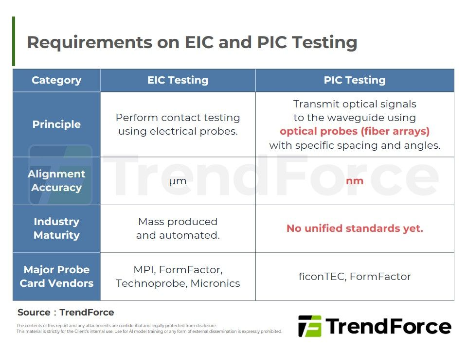

HTML REPORT •
CPO 量產卡點：測試基礎設施才是台積電 COUPE 的關鍵瓶頸
CPO 的投資重點不只在光引擎與先進封裝，真正決定量產節奏的是 PIC 光學測試能否從人工、慢速、缺標準，升級成晶圓級自動化量產流程。
一句話結論
如果 2330 台積電 COUPE 平台要在 2026 年把 CPO 推進量產，PIC 晶圓級光學測試會是最關鍵的前哨戰；誰能把奈米級光學對位、插入損耗、偏振相關損耗與光電交互測試做成高吞吐量流程，誰就掌握 CPO 商業化的節奏控制權。
瓶頸在哪
μm → nm
EIC 多為微米級電性接觸；PIC 需要奈米級光學耦合。
>100 秒
來源貼文指出單顆 PIC 完整測試目前可能超過 100 秒。
約 800 倍
單模光纖與波導截面積差異巨大，讓耦合對位更困難。
缺統一標準
TrendForce 圖中直接標示 PIC 測試尚無統一標準。
CPO（Co-Packaged Optics，共封裝光學）把光學 I/O 拉近運算晶片，目標是降低資料中心高速互連的功耗與延遲。但這也把測試難度從單純電性接觸，推進到電、光與光電轉換同時驗證。
EIC 測試已高度自動化，PIC 測試仍面臨對位、標準、量測參數與吞吐量問題。這就是為什麼 CPO 的量產風險，短期更像是測試工程問題，而非單純的封裝產能問題。
EIC 與 PIC 測試落差
四段測試流程
1. PIC 晶圓級測試（OWAT）
最關鍵階段。先在晶圓級篩掉不良 PIC，避免後續與昂貴 EIC 鍵合後才報廢。
2. EIC-PIC 晶圓級測試
確認混合鍵合後的電性與光電轉換表現，開始接近實際光引擎條件。
3. OE 級測試
確認 KGOE（Known Good Optical Engine），降低模組組裝後失效風險。
4. 模組級測試
最終驗證整體模組功能、可靠度與量產一致性。
為什麼 OWAT 最重要
OWAT 的價值在於把良率風險前移。PIC 若到 EIC 鍵合後才被判定不良，損失的不只是 PIC 本身，還包括 EIC、鍵合、封裝與後段測試成本。
因此，CPO 供應鏈真正需要的是能在晶圓級快速判定 PIC 可用性的測試平台。這會讓設備商、探針卡、光學對位、偏振量測、可靠度測試與高光譜檢測形成新的設備投資主線。
關鍵量測項目
- 插入損耗（Insertion Loss, IL）
- 偏振相關損耗（Polarization Dependent Loss, PDL）
- 響應度（Responsivity）
- 光學耦合效率與對位容忍度
- 電、光、光電交互參數一致性
設備供應鏈
點擊欄位可排序，輸入關鍵字可篩選。公司與方案以來源貼文為主，未獨立驗證採購或客戶關係。
| 公司／組合 | 方案 | 解決的瓶頸 | 判讀 |
|---|---|---|---|
| Advantest × FormFactor | UFO Probe Card、V93000-Triton、9 軸對位、CalVue | 縮短光學對位時間，提高自動化能力 | 最直接對應 PIC 晶圓級測試瓶頸 |
| Teradyne × Quantifi Photonics × ficonTEC | 300mm 雙面晶圓／晶粒測試系統 | 整合光電測試與晶圓級平台 | 測試平台商往光子專業能力補強 |
| 2360 致茂（Chroma） | 可靠度測試 | 模組與元件長時間穩定性驗證 | 台灣設備股中較直接可觀察者之一 |
| Keysight | 偏振量測 | PDL 與光學訊號品質驗證 | 偏高階量測儀器定位 |
| Enlitech（Night Jar） | 高光譜漏光定位 | 缺陷定位與光路異常檢查 | 偏檢測與失效分析角色 |
| MPI、Technoprobe、Micronics | EIC 探針卡供應 | 傳統電性接觸測試 | 成熟度高，但與 PIC 光學測試難題不同 |
台灣供應鏈
這則訊號對台灣供應鏈的重點，不是「CPO 會不會發生」，而是量產路線中哪一段會先形成資本支出。若 COUPE 進入 2026 量產節奏，測試、探針卡、光學對位、可靠度與失效分析會比最終模組熱度更早反映。
2330 台積電是 COUPE 平台的核心觀察對象；2360 致茂（Chroma）則出現在來源貼文的可靠度測試供應鏈中。這些都是來源所指向的方向性線索，仍需後續用訂單、資本支出與法說會描述交叉驗證。
最早驗證點
OWAT 測試設備、探針卡與光學對位平台是否進入客戶驗證。
最大風險
標準未定、測試時間過長，導致良率與成本無法支撐量產。
投資訊號強弱
後續觀察
三個催化條件
- 2330 台積電對 COUPE 2026 量產節奏釋出更清楚的時程或客戶驗證資訊。
- Advantest、FormFactor、Teradyne、ficonTEC 等設備商出現 CPO 測試相關訂單或營收描述。
- 2360 致茂（Chroma）或其他台灣設備商在法說會提到矽光子、CPO、可靠度或光電測試需求。
兩個盲點
- 來源貼文屬市場觀察與產業分析，並不等於台積電或設備商正式量產公告。
- CPO 測試供應鏈分散，單一公司即使技術相關，也不代表營收彈性會立即放大。
來源
來源貼文：駿HaYaO（@QQ_Timmy），2026-05-28，X 貼文 https://x.com/qq_timmy/status/2059906016700162126。引用來源：TrendForce（@trendforce）貼文與附圖。互動數據擷取時約為 11,038 views、78 likes、8 reposts、36 bookmarks。
